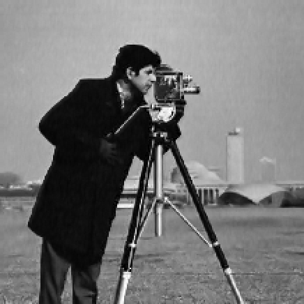
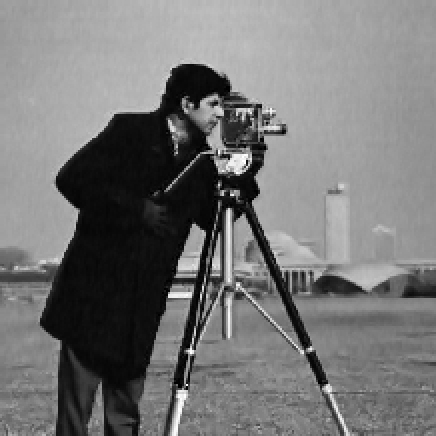
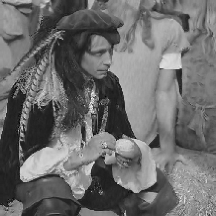
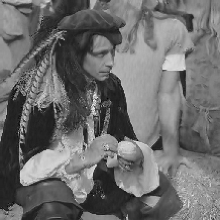

Projets universitaires
Algorithme de débruitage (Février-mai 2020)
Objectif : Expérimenter plusieurs techniques de débruitage d'image, plus particulièrement en utilisant une méthode de préservation des bords, grâce aux principes de l'algorithme BM3D, tel que le filtrage 3D et la correspondance par blocs (le but étant de proposer un algorithme basé sur ces principes plutôt que d'implémenter l'algorithme BM3D tel quel).
Contexte : Master 1 en Intelligence Artificielle, en Erasmus à l'Université de Malte.
Outils :

 



 

 English
English
Made with by Benoît Pannetier © 2022
Finding Space by Takahiro Sakamoto